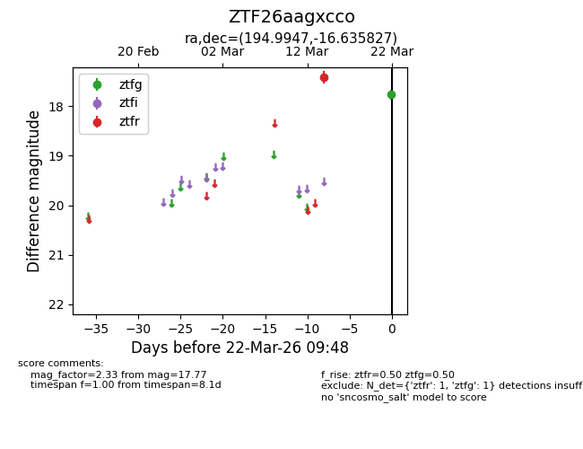
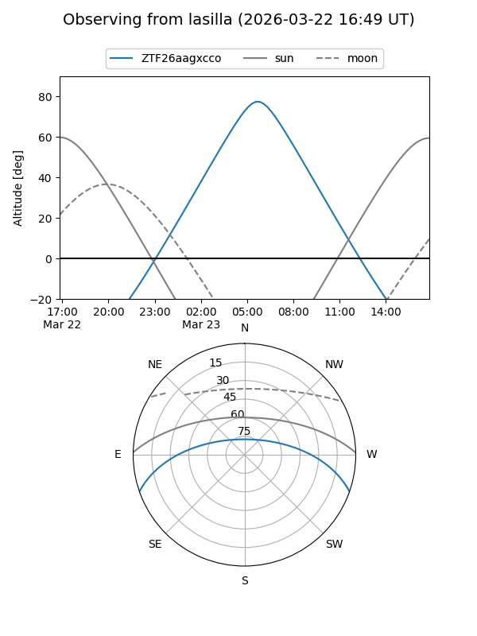
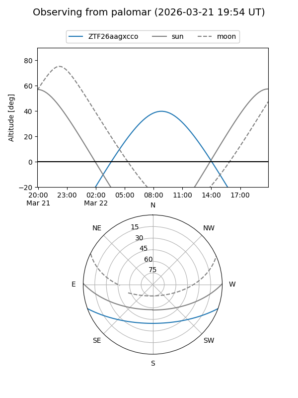

ZTF26aagxcco
Target ZTF26aagxcco at 2026-03-22 09:50
Aliases and brokers:
FINK: link
Lasair: link
ALeRCE: link
alt names
ZTF26aagxcco (ztf,fink_ztf)
Coordinates:
equatorial (ra, dec) = 194.9947,-16.63583
equatorial (HMS+DMS) = 12:59:58.72,-16:38:08.98
galactic (l, b) = (305.8876,+46.18690)
Flags:
Photometry:
last ztfg=17.77, ztfr=17.41
1 ztfg, 1 ztfr detections
Lightcurve

Visibility


Additional plots